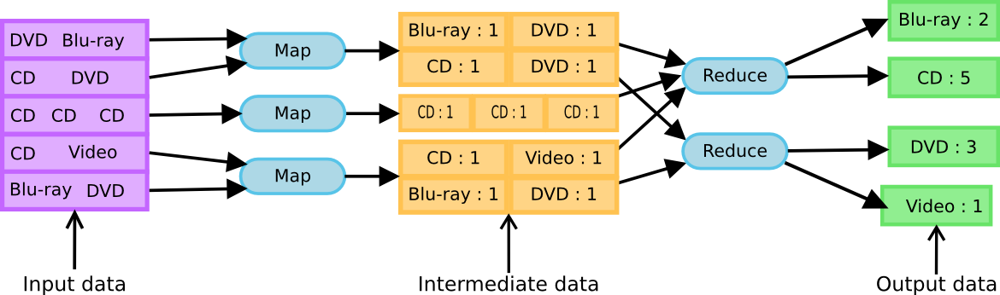

Improving performance through parallelization
Table of content
- Introduction
- The problem
- How does it work
- What is to big
- How to solve it
- Conclusion
Me, myself and I
Bonta Sergiu Vlad
Email/contact: bonta.vlad@gmail.com or just google my name
Web developer for about 5 years(it's less then 5 but not by much)
Me knows mostly Python and Javascript
The problem
8VANCE
What they say
8vance is a high-tech start-up who has developed the first deep matching platform for talents and recruiters. Our platform combines with a virtual recruitment and career assistent called AIMA (Automatic Intelligent Matching Agent) who does all the work. AIMA is based on the 8vance state-of-the-art platform matching technology. This technology matches jobs and talents better and faster.
How does it work
When big is to big
Millions of users each having hundreds of traits that have to be matched against millions of jobs each having hundreds of traits.
Big Data
The Three Vs of Big Data
Put simply, big data is larger, more complex data sets, especially from new data sources. These data sets are so voluminous that traditional data processing software just can’t manage them. But these massive volumes of data can be used to address business problems you wouldn’t have been able to tackle before.
Volume
The amount of data matters. With big data, you’ll have to process high volumes of low-density, unstructured data. This can be data of unknown value, such as Twitter data feeds, clickstreams on a webpage or a mobile app, or sensor-enabled equipment. For some organizations, this might be tens of terabytes of data. For others, it may be hundreds of petabytes.
Velocity
Velocity is the fast rate at which data is received and (perhaps) acted on. Normally, the highest velocity of data streams directly into memory versus being written to disk. Some internet-enabled smart products operate in real time or near real time and will require real-time evaluation and action.
Variety
Variety refers to the many types of data that are available. Traditional data types were structured and fit neatly in a relational database. With the rise of big data, data comes in new unstructured data types. Unstructured and semistructured data types, such as text, audio, and video require additional preprocessing to derive meaning and support metadata.
Big Data Challenges
First, big data is…big. Although new technologies have been developed for data storage, data volumes are doubling in size about every two years.
But it's not enough to just store de Data
Data must be used to be valuable and that depends on curation. Clean data, or data that’s relevant to the client and organized in a way that enables meaningful analysis, requires a lot of work.
Tools to help tame the complexity
Apache Spark
Apache Spark is one of the key big data distributed processing frameworks in the world.
You’ll find it used by banks, telecommunications companies, games companies, governments, and all of the major tech giants such as Apple, Facebook, IBM, and Microsoft.
Enter PySpark
Welcome to
____ __
/ __/__ ___ _____/ /__
_\ \/ _ \/ _ `/ __/ '_/
/__ / .__/\_,_/_/ /_/\_\ version 2.1.0
/_/
Using Python version 2.7.13 (v2.7.13:a06454b1afa1, Dec 17 2016 12:39:47)
SparkSession available as 'spark'.
"Hello World"
>>> words = sc.textFile("/usr/share/dict/words") >>> words.filter(lambda w: w.startswith("spar")).take(5) [u'spar', u'sparable', u'sparada', u'sparadrap', u'sparagrass'] >>> help(pyspark) # Show all pyspark functions
Hadoop

Infrastructure software for processing and managing large datasets. Hadoop is a cluster system.
Distributed File-System(HDFS)
Hadoop Distributed File System allows you to store the data in an easily accessible format, across a large number of linked storage devices and MapReduce - which provides the basic tools for poking around in the data.
MapReduce

MapReduce is named after the two basic operations this module carries out - reading data from the database, putting it into a format suitable for analysis (map), and performing mathematical operations i.e counting the number of males aged 30+ in a customer database (reduce).
Conclusion
In the end we did not chose the PySpark/Hadoop way.